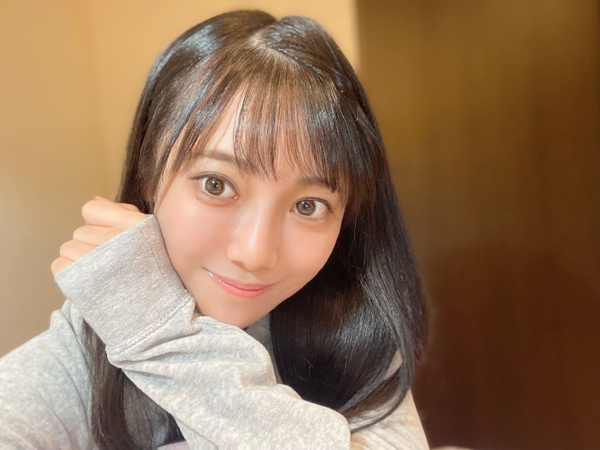
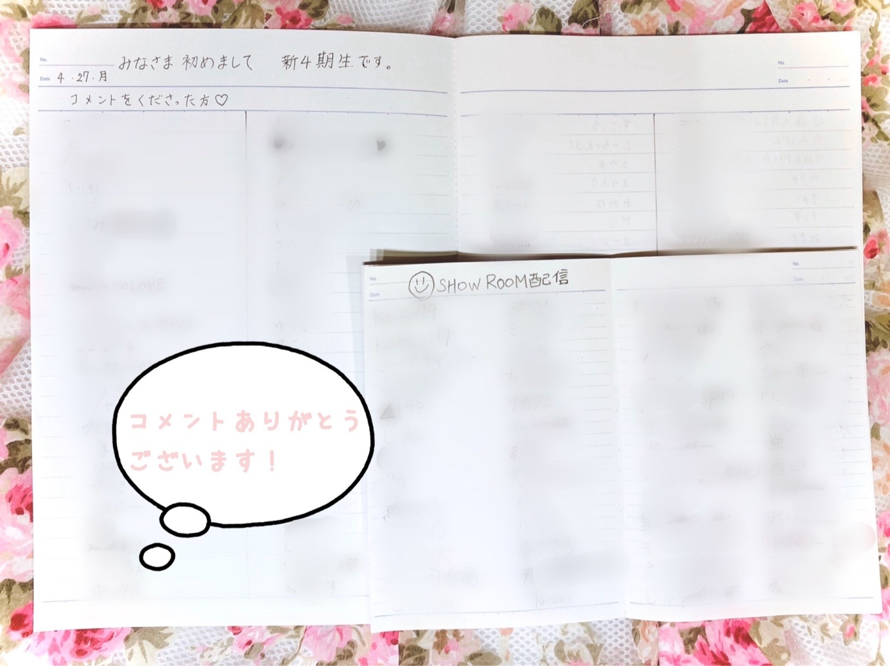

| 2020/05 07 Thu | 新4期生リレー 知りたいな ☺︎ 黒見明香 |
みなさま こんにちは✨
「乃木坂46 真夏の全国ツアー2017 FINAL! IN TOKYO DOME」
特別配信楽しんでますか〜？いよいよ本日最終日ですね！
ココを見つけてくださり ありがとうございます♪
乃木坂46 新４期生の黒見明香です。
『初めて見たよ・・？』という方も多いことと思います。
すこーしだけ自己紹介させてくださいませ☺︎
♪:*:･･:*:･･:*:･･:*:･･:*:･･:*:･♪:*:･･:*:･･:*:･･:*:･･:*:･･:*:･♪
黒見 明香（くろみ はるか）
2004年1月19日生まれ 16才
香港生まれ・東京都出身です
くろみん と呼んでくれたら嬉しいです♩
3の倍数9・6・3(くろみ) と覚えてね☺︎
☆好きな場所 パン屋さん お風呂屋さん 商店街や屋台
★苦手な場所 お化け屋敷 ジェットコースター ...頑張ります汗･･;;
＊ みなさんは 今どんな場所に行きたくなりますか ？
★苦手な場所 お化け屋敷 ジェットコースター ...頑張ります汗･･;;
＊ みなさんは 今どんな場所に行きたくなりますか ？
♪:*:･･:*:･･:*:･･:*:･･:*:･･:*:･♪:*:･･:*:･･:*:･･:*:･･:*:･･:*:･♪

今回は "初めての「質問返し」"
させて頂きたいなとワクワクしています♪
"緊張してるだろうけれど、もっと力を抜いてリラックスだよ✨"
という温かなメッセージをいただいて....
今日のコメント返しは、敬語ではなく
「普段のおしゃべり言葉」も混ぜて
お返事させていただこうかな、と思っています。
お許しくださいな✩︎⡱
＊
◎コメント読んでくれた？遅くなっちゃったけど読んでる？
◎今まで勇気がなかったけど、初コメントです。見てますか？
もちろんです(๑˃̵ᴗ˂̵)و
初めてのブログも２回目のブログも、全て読ませて頂きました。

♪:*:･･:*:･･:*:･･:*:･･:*:･･:*:･♪:*:･･:*:･･:*:･･:*:･･:*:･･:*:･♪
コメント全部、ジーン...としたり、笑ったりしながら
嬉しくありがたく読ませて頂きました♪
初めて知ってくださった方、何度もコメントくださる方、一昨年オーディションSHOWROOMから見守ってくださる方...
離れてても一緒に過ごしている感じがして
すごく嬉しい((〃ω〃))✨
本当にありがとう。。。
♪:*:･･:*:･･:*:･･:*:･･:*:･･:*:･♪:*:･･:*:･･:*:･･:*:･･:*:･･:*:･♪
【なまえ のこと】
⚫︎ はるか の名前や漢字の由来は？
⚫︎ハッピーベイビーというあだ名は、どうしてついたの？
⚫︎香港生まれだから、ハーフなの？
2004年の旧正月に、香港で生まれました。
町は、新型肺炎SARSを収束させるため戦っていました。
そんな大変な中、色々な国の方が、弱い赤ちゃんを助けようと、専用の出入口を作ったり、貴重なマスクや食料を差し入れて、皆んなでわたしを育ててくれました。
そんな香港の周りの方への感謝の気持ちを「香」に、
明るい春が来ますように・・という願いを込めて
「明香（はるか）」と名付けられたそうです。
・・・読みづらいよね^^;;
＊
いつもニコニコ笑っていたので、近所の皆さんが
"あの子に会うと元気になれる！"と、
『ハッピーベイビー✨』
と名付けて呼んでくれました。
この体験が、"アイドルになりたいなぁ"
と憧れた 最初のきっかけかもしれません☺︎
＊
両親とも日本人です。
お父さんの仕事の関係で住んでいたの。
なので、日本人です。
でも、香港で登録したミドルネームがあります。
実は・・・まさかの レイチェル！
HARUKA RACHEL KUROMI
・・・ちょと恥ずかしい\(//∇//)\笑
♬ *。♩*。♬
【 くろみん 】
⚫︎なんて呼べばいいですか？なんて呼ばれたい？
⚫︎ずっときゅーちゃんって呼んでたから慣れないよ笑
⚫︎恥ずかしいので黒見さんって呼んでもいいですか？
⚫︎みはるちゃんと呼んでいいですか
⚫︎英語のPal(友達)由来で、ぱるちゃんて呼んでいます
⚫︎賀喜遥香さんが「かっきー」なので、はるかで考えてください
⚫︎コールのときはなんて呼べばいいのかなー？
⚫︎ライブで黒見ちゃーんのほうが良い？
⚫︎ずっときゅーちゃんって呼んでたから慣れないよ笑
⚫︎恥ずかしいので黒見さんって呼んでもいいですか？
⚫︎みはるちゃんと呼んでいいですか
⚫︎英語のPal(友達)由来で、ぱるちゃんて呼んでいます
⚫︎賀喜遥香さんが「かっきー」なので、はるかで考えてください
⚫︎コールのときはなんて呼べばいいのかなー？
⚫︎ライブで黒見ちゃーんのほうが良い？
『くろみん』て呼んでもらえたら嬉しいな
名前被りで申し訳ないです;;
はるかは ４期生 賀喜遥香ちゃん♡
ぱるは 日向坂46 山口陽世ちゃん♡ なので、
コールやライブでは、よかったら
『くろみん！』
って呼んでもらえたらすごく嬉しいです♪
⚠️だがしかし、ここにも名前被りが。。。↓
⚫︎マイメロのクロミちゃん好きですか？
⚫︎サンリオの好きなキャラはいますか？
⚫︎サンリオのクロミ様って言われたことありますか？
⚫︎サンリオの好きなキャラはいますか？
⚫︎サンリオのクロミ様って言われたことありますか？
クロミ様呼びしたいです
クロミ様！！ カッコイイ✨ヾ(･ω･*)
幼稚園の時、いつもクロミちゃんの三輪車に乗っていて
（＊注 自転車は今も乗れないケド、三輪車は乗れるよ）
ともだちが、
「はるかちゃんは 名前がクロミなのに、
どうしてわたしの名前は、マイメロちゃんじゃないのーー!!」
と号泣しちゃった思い出があります
もちろんクロミちゃん大好きでグッズも持っています⭐︎
♪:*:･･:*:･･:*:･･:*:･･:*:･･:*:･♪:*:･･:*:･･:*:･･:*:･･:*:･･:*:･♪
【 握手会 】
⚫︎握手会は楽しみですか？どんなお話したらいい？
⚫︎握手会に行ったことありますか？
⚫︎髪型とか服とか真似して握手行ってもいいですか？
⚫︎握手会に行ったことありますか？
⚫︎髪型とか服とか真似して握手行ってもいいですか？
⚫︎緊張するので恥ずかしくて握手会行ったことがないんです
⚫︎お顔覚えるのが得意ということでたくさん行くから覚えてね！
⚫︎お顔覚えるのが得意ということでたくさん行くから覚えてね！
⚫︎年下でもいい？ タメ口でもいい？
⚫︎おしゃべり好きと言うことはコミュ力はある方なのかな？
恥ずかしいの分かります^^;;
いざ自分の番が近づいてくると急に焦っちゃったり
話したいこと伝えられなかったりするよね
わたしも絶対緊張しちゃうと思う\(//∇//)\
でも。。。
言葉以上に、もう気持ちがいっぱい伝わってくると思うから
どうぞそのままリラックス、りらっーくす・・・
ってわたしが一番緊張してドキドキしてそうです笑
早く会いたいなー！！
お話するのも好きだし、聞くのも楽しい♪
もちろんタメで、おそろ嬉しいっ、ぜひっ✩︎⡱
書いてくださったコメントに嬉しいことばを発見！
＜乃木坂ファンには年齢の壁はないのです＞
♪素敵ですよね✨
♪:*:･･:*:･･:*:･･:*:･･:*:･･:*:･♪:*:･･:*:･･:*:･･:*:･･:*:･･:*:･♪